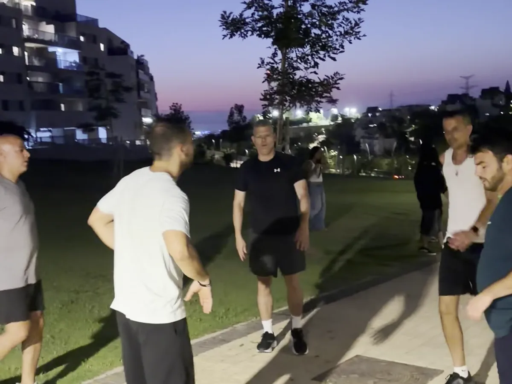
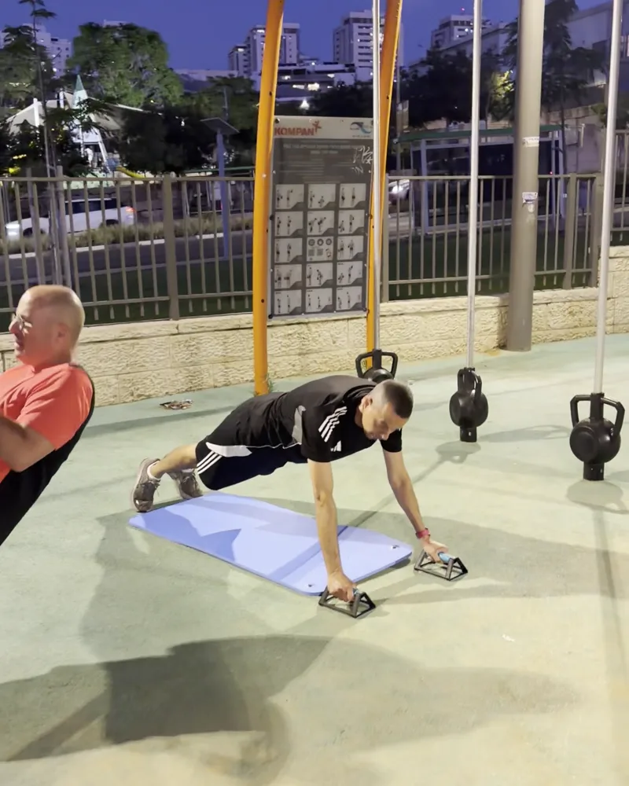
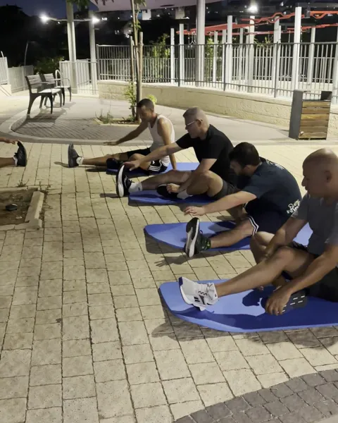

למה דווקא הפעם זה יתפוס?
כל הסיבות שבגללן עוזבים חדר כושר — שעמום, אנונימיות, אף אחד לא שם לב — נבנו כאן הפוך.
- שמים לב שלא באת. קבוצה קבועה של עד 12 גברים — אותם פנים, שמות מהדקה הראשונה. כשלא הגעת, שואלים איפה היית. זה כל הסוד של התמדה.
- אף אימון לא חוזר על עצמו. כוח, תנועה פונקציונלית, תחנות, משחקים ותחרויות קטנות. נשברת מ"אותו דבר לבד מול מכונה"? בדיוק בשביל זה.
- בלי דמי רישום, בלי חוזה שנתי. מנוי חודשי גמיש. נשארים כי טוב לך פה — לא כי חתמת.
- פספסת שבוע? חוזרים כאילו כלום. מילואים, ילד חולה, פרויקט בוער — ככה נראים חיים של אבות. אין "פספסתי, אז אין טעם" — באים לאימון הבא, והקבוצה באותו מקום.
- מאמן שיודע מה כואב לך. תמיר מכיר כל אחד, מתאים את העומס לכל רמה — עצימות שבונה בלי לשבור. גם אם לא נגעת בברזל מאז הצבא.
כל היום מול מסך והגב הורג אותך? בשביל זה יש אימון פונקציונלי
ישיבה של שמונה עד עשר שעות ביום עושה את שלה: גב תפוס, כתפיים שנופלות קדימה, ואנרגיה שנגמרת בדיוק כשהילדים צריכים אותך. זה לא גזירת גורל — אלה שרירים שהפסיקו לעבוד.
האימון בנוי בדיוק על זה: כוח, יציבה ותנועה פונקציונלית — דברים שמרגישים ביום-יום. לקום בבוקר בלי אנחה, לסחוב את הסלים מהרכב בסיבוב אחד, לרדוף אחרי הילדים בלי להתנשף.
ובני 40 פלוס — זה בדיוק הגיל לעצור את המדרון. בלי דרמה, בלי הבטחות פלא: חבר'ה, עבודה עקבית, ושעתיים בשבוע אחרי שהילדים בשגרת ערב. פחות ממה שהולך על סדרה — רק שמפה יוצאים חזקים יותר.
הפרטים היבשים
ראשון ורביעי, 20:00 — בפארק בראש העין
- ימים ושעה: ראשון ורביעי, 20:00 — 60 דקות.
- מיקום: גינת הכושר בפסגות אפק — הגינה הכתומה מעל כיכר צוות, גולדה מאיר 20, ראש העין. הרבה מקום חניה בסביבה.
- הקבוצה: עד 12 מתאמנים. כשקבוצה מתמלאת — נפתחת רשימת המתנה.
- הציוד: קטלבלים, משקולות, גומיות, TRX ומתקני הפארק — הכל מגיע איתנו, אתה מביא רק מים.
- רמות: כל תרגיל בכמה רמות — מתחיל ומי שכבר בעניינים מתאמנים באותו אימון, כל אחד בעומס שלו.
- חורף: בימי גשם עוברים למתחם מקורה — האימון לא מתבטל.
- איך מתחילים: אימון ניסיון, בלי התחייבות — מתאמים בוואטסאפ.
האימון בגינת הכושר בפסגות אפק
מתאמנים בגינת הכושר של פסגות אפק — הגינה הכתומה מעל כיכר צוות (גולדה מאיר 20), עם רחבת דשא ומתקני מתח ומקבילים. אימון קבוצתי בפארק בראש העין הוא לא פשרה מול חדר כושר — הוא השדרוג: אוויר פתוח בשעת ערב במקום אולם מחניק, דשא במקום מראות, וחמש דקות מהבית במקום פקק בדרך לקניון. את הציוד המקצועי — קטלבלים, משקולות, גומיות, TRX — אנחנו מביאים לכל אימון, ובימי גשם עוברים למתחם מקורה.

קבוצת האבות בפתח תקווה · נפתחת ב-11 באוקטובר
אותה שיטה, אותו גודל קבוצה, עיר שנייה. ב-11 באוקטובר נפתחת בפתח תקווה קבוצת אבות — אימון פונקציונלי בפארק, פעמיים בשבוע בשעות הערב, בקבוצה קטנה עם מאמן צמוד. מי שנרשם לפני הפתיחה נכנס כחבר מייסד.
- 10% הנחה על המחיר — לשנה שלמה. לא לחודש הראשון, לשנה.
- יציאה חופשית ב-30 הימים הראשונים. לא מתאים — מפסיקים, בלי התחייבות לתקופה.
- אין חיוב עכשיו. ההרשמה נסגרת בשיחה, והחיוב מתחיל עם פתיחת הקבוצה.
- לוח הזמנים המדויק ונקודת המפגש נשלחים לנרשמים לפני האימון הראשון.
הילד שלך מתאמן אצלנו? עכשיו תורך
אתה כבר מכיר אותנו — מהצד של המגרש. אותו פארק שבו הילד שלך מתאמן, אותו צוות שאתה כבר סומך עליו, אותה שיטה — מותאמת לגברים עסוקים. במקום לחכות בצד עם הטלפון, קח לעצמך את מה שסידרת לילד: מסגרת ששומרת עליך בתנועה. ותחשוב על הפנים שלו כשהוא יראה שגם אבא חוזר מאימון.
לתיאום אימון ניסיון לאבא

קבוצה חדשה, מותג שכבר הוכיח את עצמו
בלי לקשקש: קבוצת האבות יצאה לדרך ביולי 2026, והיא צעירה. מה שלא צעיר זה מה שמאחוריה — טים לידר מאמנת את הילדים והנוער של ראש העין כבר שנים: יותר מ-500 ילדים, נערים ומבוגרים התאמנו איתנו, וקהילת ההורים מדרגת אותנו 4.7 מתוך 5 ב-84 ביקורות בגוגל. אותו צוות, אותם ערכים, אותו יחס — עכשיו גם לאבות. מי שמצטרף עכשיו לא מקבל מוצר בהרצה — הוא מקבל מקום של מייסד בקבוצה שנבנית סביבו.
שאלות של אבות — תשובות בגובה העיניים
כבר ניסיתי חדר כושר והפסקתי. למה שהפעם זה יחזיק?
כי הפעם אתה לא לבד מול מכונה. כל הסיבות שבגללן מנויים נשברים — שעמום, אנונימיות, אף אחד לא שם לב — בנויות כאן הפוך: קבוצה קבועה של עד 12 גברים ששמה לב מי הגיע, אימון שמשתנה מפעם לפעם, ומאמן שמכיר אותך בשם. כשמישהו מחכה לך בפארק, אתה מגיע.
אני בכושר של אבא. כולם שם ירוצו לי מסביב?
לא. זו קבוצת אבות, לא נבחרת עילית — היא נבנתה בדיוק בשביל גברים עסוקים שחוזרים להתאמן אחרי הפסקה ארוכה. כל תרגיל ניתן בכמה רמות, תמיר מתאים לך את העומס אישית, ומתקדמים בהדרגה. אף אחד לא מודד אותך מול אף אחד.
בגיל 45 פלוס — לא מאוחר מדי להתחיל?
להפך: 40 פלוס זה בדיוק הגיל לעצור את המדרון. עובדים בהדרגה, בעצימות מבוקרת ובלי הבטחות פלא — על יציבה, כוח ותנועה שמרגישים בחיים של כל יום. מתחילים מאיפה שאתה היום, לא מאיפה שהיית בצבא.
מה קורה אם נעלמתי לשבוע-שבועיים בגלל מילואים או ילד חולה?
חוזרים כאילו כלום. ככה נראית שגרה של אבות, והאימון בנוי סביב זה: אין "פספסתי, אז אין טעם" — פשוט מגיעים לאימון הבא, המאמן מתאים את העומס בחזרה, והקבוצה באותו מקום שבו השארת אותה.
אימון בפארק — זה אימון רציני, או התעמלות קלה?
רציני לגמרי. עובדים עם ציוד מקצועי — קטלבלים, משקולות, גומיות, TRX ומתקני המתח והמקבילים של הגינה — במבנה אימון מסודר: חימום, עבודת כוח ותנועה פונקציונלית, וסיום קבוצתי. העצימות גבוהה אבל מבוקרת ומותאמת לרמה שלך. האוויר הפתוח הוא בונוס, לא הנחה.
מה ההבדל בין זה לחדר כושר או קרוספיט?
שלושה דברים: קבוצה קבועה עד 12 עם מאמן שמכיר אותך — לא אולם אנונימי; עצימות שנבנית בהדרגה — בלי להתרסק בדרך; ותנאים פשוטים — בלי דמי רישום ובלי חוזה שנתי, מנוי חודשי גמיש. ומעל הכל: כאן שמים לב שלא באת. זה ההבדל שמחזיק לאורך זמן.
בוא לאימון ניסיון — הקבוצה כבר בפארק
השאר שם וטלפון ונחזור אליך עוד היום לתאם. בלי התחייבות ובלי נאומים — ואם עדיף לך לדלג על טפסים, שלח וואטסאפ ונסגור הכל שם.